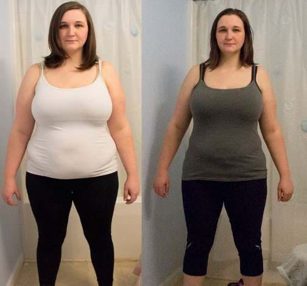
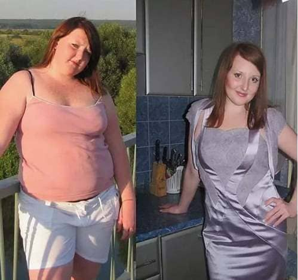
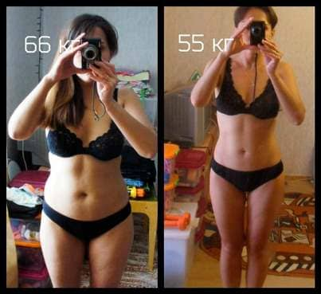
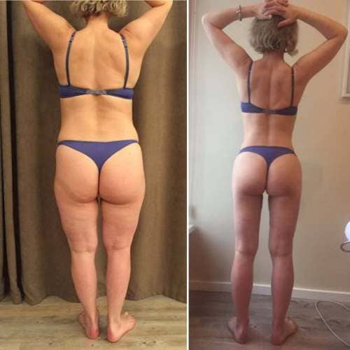
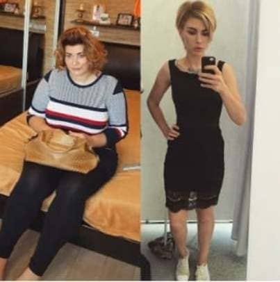
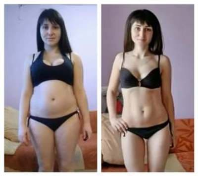
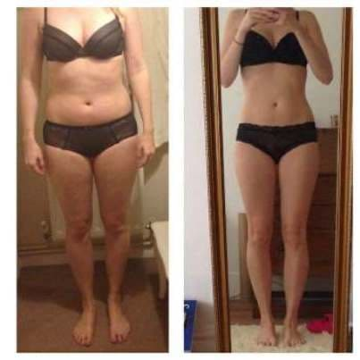

12.04.2022
Elhíztál a karantén ideje alatt? Adok egy egyszerű módot arra, hogy lefogyj 7-10 kilót (a leglustábbaknak)
74379 megtekintés
-
- Kriszta Eger
- Nyisd meg a szépség és a siker kapuit. Vedd végre kézbe magad vagy folytasd a semmittevést!
Az elmúlt néhány évben a kövér "sztárok" új trendet hoztak létre: rengeteg, különböző szögből készült fotóval dicsérik új "alakjukat". A kövér combjaikról lelógó zsírráncokat IDOMOKNAK nevezik, a nagy hasuk pedig a nőiesség megnyilvánulása!😤 Most pedig valld be: te is bedőlsz ennek a fajta önámításnak? Adok neked egy utolsó esélyt, hogy LEFOGYJ, csak rajtad múlik.
Napról napra kövérebb leszel, anélkül, hogy észrevennéd
Nem elég, ha azt mondjuk a kövérségnek, hogy "stop"! A szuper eredményekhez meg kell érteni, hogy hány plusz kiló van rajtad. Vagy talán nem is gondolod, hogy súlyproblémád van? Akkor tudd meg, mennyi felesleges zsír van a szervezetedben ezzel a kalkulátorral👇
TÚLSÚLY KALKULÁTOR
A felszedett kilókat először puffadtságnak nevezed, ugye? Igen, ha nem mozogsz sokat, a puffadtság valóban jelentkezik, de kis mértékben, nyilván nem 5 lógó kiló vagy több formájában! Tudd meg: ez a legelső szakasza a DISZNÓVÁ válásnak.
A második szakaszban elkezded meggyőzni magad arról, hogy amikor eljön az idő, nem lesz gondod a FELESLEG LEADÁSÁVAL. Pár hétig egyél csak hajdinát és kefirt, majd reggel menj el az edzőterembe izzadni vagy futni reggelente. Vagy - ami valószínűbb! - rengeteg kifogásod lesz, séták jégkrémmel, munka közben sietve bekapott szendvicsekkel, és a végén lustasággal. Sok LUSTASÁGGAL. 😠
A harmadik fázist a nagyobb ruhák vásárlása és annak a kifejezésnek a bevezetése a szókincsedbe, hogy a férfiak szeretik az idomokat, hogy legyen mibe "belekapaszkodni". Tetszik a kövér, lusta pingvinek kedvenc mondása is: "Az ember nem kutya, hogy csonton rágódjon". Ahahaha! Jó ürügy arra, hogy szappanoperák nézése közben a kedvenc pizzádat zabáld, nem igaz?
Nos, a férfiak valóban szeretik az idomokat, de körülbelül az olyanokat, mint amilyet ez a fotó mutat.
Feszes mell, kerek fenék, lapos has és formás lábak — egy VALÓDI NŐ IDOMAI, aki magabiztos a testében és tudja, hogy mennyit ér. A puha has, a laza és masszív combok és a cellulittól göcsörtös fenék pedig a természetes idomtalanság és az önbecsülés hiányának megtestesítői. 😱
Ez egyetlen épeszű férfinek sem tetszik.
Természetesen folytathatod így, vagy hallgathatsz rám, és mondhatod magadnak: "Állj! Elég volt! A zsír nem szép! És én szép akarok lenni!".
A lusta zsírdisznók álma valóra vált
Nem arra bátorítalak, hogy izzadj agyon az edzőteremben, vagy éhezd magad halálra egy szénhidrátmentes diéta miatt. Úgysem vagy képes rá. Elvégre ERŐFESZÍTÉS NÉLKÜL, GYORSAN akarsz fogyni, méghozzá úgy, hogy lefekvés előtt még a hűtőbe is beleshess. Ismerem a fajtád... Legalábbis a többséget.
Íme tehát megadom a LEGKÖNNYEBB, legegyszerűbb és leggyorsabb MÓDJÁT annak, hogy MEGSZABADULJ A FELESLEGES KILÓKTÓL, mielőtt kimész az utcára és a frászt hozod a férfiakra. Ha pedig ezt sem tudod kihasználni, akkor máris úton vagy a "90 kiló felettiek" életre szóló tagsága felé.
Szóval...
Észrevetted már, hogy az ázsiai nők egész életükben karcsú babák maradnak?
Gondolkodtál már azon, hogy miért?
A válasz itt van. Gyermekkoruk óta nagy mennyiségben fogyasztanak trópusi gyümölcsöket, amelyek hozzájárulnak a ZSÍRSEJTEK LEBONTÁSÁHOZ ÉS AZ ANYAGCSERE FELGYORSÍTÁSÁHOZ.
Guava. Ez az egzotikus gyümölcs erősíti az immunrendszert, helyreállítja a vitalitást, küzd az ételmérgezések ellen, javítja a szívműködést, növeli a test tónusát, normalizálja a menstruációs ciklust, helyreállítja az endokrin rendszert és szabályozza a hormonális működést.
ZÖLD TEA KIVONAT. Nagy mennyiségű koffeint és polifenol katechint, vitaminokat (C, P, K stb.) tartalmaz. Ezek az anyagok nagy biológiai aktivitással rendelkeznek: erős antioxidánsok, részt vesznek az anyagcserében, befolyásolják a vércukorszint szabályozását. A katechinek és a C-vitamin kimondottan képesek csökkenteni a kapillárisok áteresztőképességét. Ezenkívül a C-vitaminnal együtt vérzéscsillapító hatásúak és csökkentik a káros koleszterinszintet.

KESERŰ NARANCS KIVONAT. (sevillai narancs). Az éretlen gyümölcs és az érett gyümölcs héja egy amfetaminszerű anyagot, a szinefrint tartalmaz, amely zsírégető hatású. Segít elnyomni az étvágyat, csökkenti a testsúlyt, segíti a szervezet hőtermelését, ami növeli a nap folyamán felszabaduló energia mennyiségét. A szinefrin felgyorsíthatja a zsírbontást, gyulladáscsökkentő és fertőtlenítő hatású, valamint javítja a mikrokeringést és az anyagcserét a problémás területeken. A bőrre is pozitív hatással van: felfrissíti és puhítja a bőrt, valamint serkenti a regenerálódását. Az anyag tonizáló tulajdonságokkal rendelkezik, növeli a központi idegrendszer aktivitását, enyhe stimuláns és fertőtlenítő hatású.
Fontos! A termék magas rosttartalmú, segít blokkolni a szénhidrátokat, segít megelőzni a zsírfelszívódást, befolyásolja az anyagcserét, javítja az emésztőrendszert és csökkenti az éhségérzetet, valamint segíti a megfelelő méregtelenítési folyamatot. A hatóanyagok egyedülálló kombinációjának köszönhetően 70%-kal fokozza az anyagcserét!
De nem engedheted meg magadnak, hogy mindennap ilyen egzotikumokért fizess, és nem találsz ilyet a városodban. És milyen klassz lenne, ha néhány kiló gyümölcstől MAGÁTÓL ELÉGNE A ZSÍR... (álom, mi?) 😊
Mi a teendő?
Nemrégiben végre valóra vált minden kövér nő álma, hogy ERŐFESZÍTÉS NÉLKÜL FOGYJON. Van egy új termék a piacon, amely egyesíti a gyümölcsökből származó kivonatokat, amelyekkel a thai nők fogynak. Ráadásul a kivonatok zsírégető hatása a speciális technológia alkalmazásával többszörösen nagyobb, mint a nyers gyümölcsé.
Ne ijedj meg, nem kell lemondanod a szeretett pizzádról, és a felmelegített kanapéról sem kell felállnod. Pontosan az olyan bálnáknak való, mint te.
Mondj köszönetet a
Személy szerint úgy gondolom, hogy megérdemled, hogy szenvedj a felhalmozott zsírért: liternyi izzadság és a fogyókúra gyötrelmei. 😓 És őszintén szólva, még azt is sajnálom, hogy ez most elkerülhető, hála ENNEK A TERMÉKNEK. A nevű új készítményt ausztrál táplálkozási szakemberek hozták létre, miután több száz trópusi gyümölcsöt és növényt vizsgáltak, és kiválasztották a leghatékonyabbakat.
A megteszi helyetted azt, amire te alapvetően képtelen vagy. Olvad a felhalmozott zsír az egész testben, nem rosszabb a fitnessnél. A természetes folyamatok révén pedig annyira felgyorsítja az anyagcserédet, hogy egy hónap múlva mindenki azt fogja kérdezni, milyen diétát csináltál.
Nézd, ő Kata, az egyik feliratkozóm. Micsoda egy lusta liba. De le akart fogyni — és le is fogyott. A jobb oldalon az eredmények láthatók 5 hét szedése után, szülési szabadságon, otthon ülve! Mínusz 11 kg. Nem rossz? 👍
Íme egy másik feliratkozón, Nóra eredménye. A válás után végre úgy döntött, hogy formába hozza magát. Körülbelül négy hónapba telt az egész, de a kezdte. Ha nem lett volna a , nem mozdult volna el a holtpontról, ezt elmondhatom.
És itt egy másik hősnőm, Marina. Átment egy váláson és egy idegösszeroppanáson, de a köszönhetően újra össze tudta szedni magát . Egy kúra alatt 13 kilót fogyott, és ez szuper eredmény💪. De nem állt meg itt, és a következő hat hónapban további 8 kilótól szabadult meg. Meg tudom érteni!
De még mindig vannak kétségeim: elég neked egy 4-6 hetes kúra, vagy esetleg hosszabbra van szükség? Valószínűleg nem. Fél teáskanálnyi port mindennap fel kell oldani egy pohár vízben, és naponta kétszer meg kell inni, anélkül, hogy egy napot is kihagynánk! Rémes! Hát akkor maradj kövér, és menj a fenébe. És akik hallgatnak rám - nemcsak nagyszerű formába kerülsz rövid idő alatt, de megkíméled magad a kimerítő edzésektől, az undorító, sómentes hajdinától és az egész napos pocsék hangulattól.
"A MINDEN ZSÍRSEJTET ELÉGET ÉS STABILIZÁLJA A SÚLYT, így a tested neked fog dolgozni, nem pedig ellened: minden extra süteményt tiszta szénhidráttá és energiává alakít, nem pedig vastag cellulitrétegként rakódik le a fenekedre és a combodra. Erősen ajánlom, hogy kezdd a SÚLYFELESLEG kiszámításával egy speciális kalkulátorral (lásd alább), majd, ismerve az ellenséget, térj át a kúrára.
Egyébként a lustáknak duplán van szerencséjük. Ma a hivatalos nyereményjátékon keresztül nagy kedvezménnyel csípheted meg a ! De ne örülj annyira! Ez egy promóciós kampány, ezért az akciós csomagok szinte azonnal elfogynak. Valld be: most éppen eszel, vagy már továbbléptél a cselekvés felé, hogy örökre megváltoztasd az életed? Ha mégis elszántad magad, akkor válaszd ki az alábbi ajándékcsomagok egyikét, vedd igénybe a kedvezményt, és hagyd meg telefonszámod a megrendelőlapon. Egy tanácsadó visszahív és mindent elmagyaráz. Sok szerencsét!
Hozzászólások
Drága, nagyon vicces és motiváló, mint mindig! Lányok, próbálta már valaki ezt a port szedni? Van hatása?
Nekem személy szerint segített, már 7 kg-ot fogytam 2 hét alatt ezzel a porral, pedig soha nem próbáltam semmilyen diétát vagy sportot. A szerző igazat mond, lusta vagyok, nem csinálok semmit, mégis fogyok, mintha varázslat lenne))) Beszedem az egész csomagot, kíváncsi vagyok, mennyit fogok fogyni...

Igen, mintha rólam írtál volna, köszönöm, Kriszta. Kiváló készítmény, elégedett vagyok az összetételével: természetes, kémiai adalékanyagok nélkül. Tegnap kaptam, naponta kétszer fél teáskanálnyi port kell feloldani 200g vízben, nem bonyolult. Hamarosan én is sovány leszek.
Micsoda bolondok vagytok!! Mi lehet jobb, mint a természetes női formák egy férfi számára? Szerintetek a csontváz szép??
Ildi, látszik magán, micsoda szépség... A pedig nem lehet anorexiáig fogyni, a szervezet csak a zsírtól szabadul meg, nem az izomtól.
Ildi, ritka rusnya vagy, a férfiak a szép csinos nőket szeretik és tisztelik, nem a zsírseggeket.
Nálam a plusz kilók 40 éves korom után kezdtek megjelenni. Hogy őszinte legyek, elengedtem magam, elkezdtem kihagyni az edzéseket, ettem, amit akartam. A végén cellulitisz, elmosódott derékbőség és egy tucat plusz kiló lett belőle :(((( Nemrég kezdtem el szedni a , és nem ismerek magamra. Egészen a közelmúltig nem hittem, hogy bármilyen porral vissza lehet térni a normális súlyhoz és az egészségem károsítása nélkül!!!
Nagyon elhíztam szülés után... Nem számítottam arra, hogy ennyi plusz kilót fogok felszedni. És nem tudtam megszabadulni tőle semmilyen módon. Kipróbáltam az összes sztár és a leghíresebb diétákat - nulla eredmény!!!! A mentett meg. Több mint 10 kg-ot fogytam a kúra alatt, de a legjobb az egészben, hogy utána is folytattam a fogyást!!! Ez a különbség a előtti állapothoz képest! Lassan visszatérek a 46-os méretemhez. Hurrá!!!

Mária, és nem próbált sportolni és kevesebbet ZABÁLNI? Mindenki olyan lusta, várnak egy csodapirulára, hogy ne kelljen erőlködniük!!!
Olga, valójában sportolok és normálisan eszem. A segített elindítani a zsírégetést és elindulni a holtpontról! És csak diétával és testmozgással nem lehet annyi súlyt leadni, mint a segítségével.
Én is régóta próbálok megszabadulni A TÚLSÚLYTÓL. Sok mindent kipróbáltam, rengeteg diétát és méregtelenítést csináltam, és az egészségemet nagyon megviselte. És a súly állandóan visszatér. Kipróbáltam a , és meglepett az eredmény. Két héttel a kúra megkezdése után a puffadtság és az első plusz kilók eltűntek. Most már ismétlem a kúrát, mindenkinek ajánlom!

5 hét alatt 13 kg-ot fogytam, tehát a szerző igazat mond, a testem nem szenvedett ettől a fogyástól, és nem jelentek meg striák, aminek örülök. Bárcsak hamarabb tudtam volna erről a készítményről, már régen csini lennék. Akciósan jutottam hozzá,

Egy hét alatt 2 kg-ot fogytam. Szuper! Folytatom!!
Mondják, vannak mellékhatások? Kicsit aggódok.
Tilda B., nincsenek mellékhatások, mivel a termék természetes, azaz csak gyümölcskivonatokból áll, amelyek nem okozhatnak kárt a szervezetben.
A valamivel több mint 2 hónapja szereztem tudomást, sikerült 51 kg-ot fogynom. A különbség nyilvánvaló! Nem sportoltam, próbáltam kevesebbet enni, de nem korlátoztam magam. Az egyetlen dolog, hogy annyi vizet ittam, mint egy elefánt, a toxinok eltávolítása miatt. A légszomj elmúlt, a narancsbőr eltűnt, újra feszes vagyok, folyton összekevernek egy diáklánnyal. Bár már jóval több vagyok, mint 30. Mindenki jó fogyást kívánok!

Azta, mindenki ilyen szépséggé vált, talán én is ráncba szedem magam.
Most van egy nagy kedvezmény a termékre, akár 50%-os kedvezménnyel is megkaphatod! Rendeljétek meg! 16 nap alatt már 8 kg zsírnak mondtam búcsút, bár továbbra is otthon ülök és szappanoperákat nézek finomságokkal. A posztnak igaza van, az alak szebb lesz, de sport és fogyókúra nem szükséges - a zsír magától elég. Még van feleslegem, hamarosan újabb kúrára lesz szükségem.
2 héttel ezelőtt vettem, már mínusz 4 kg! Készülj fel arra, hogy annyi vizet fogsz inni, mint egy elefánt, ez az egyetlen elengedhetetlen, különben az összes méreganyag és zsír nem fog tudni távozni a szervezetedből.
Hosszú ideje iszom , elégedett vagyok az eredménnyel! Nézzétek meg magatok az eredményeimet előtte és utána, ehhez nincs mit hozzátenni.

Gyerekkorom óta túlsúlyos vagyok, és mindig is kísértett a dupla toka. Egy ismerősöm tanácsára vettem ezt a készítményt, most fejezem be a második csomagot, és egy másik ember vagyok! Sikerült 28 kg-ot fogynom, és ezzel együtt leadni az arcomról a zsírt, a derekam is karcsúbb lett. Szerintem ez egy nagyszerű eredmény, most már szeretem magam, és 100 százalékosnak érzem magam!!!
Már egy hónapja szedem a terméket, nagyon vonzott, hogy a fogyás természetes és valós, azaz nem 50kg egy hónap alatt. Eddig 12 kg-ot fogytam, de egész nap vizet iszom. Az arcom megtisztult, a hajam pedig megújult. Egyszerűen csodaszer!
Baromság, én egy bloggerre vagyok feliratkozva, ő is meghízott és gyönyörűen néz ki!
Lányok, miért vagytok ilyen hülyék? Elhiszitek, hogy valamilyen csodaszer megment titeket a túlsúlytól? Ez tiszta kamu.
Márpedig a segített nekem 7kg-ot fogyni 3 hét alatt. Nincs kedvem szemetet enni, és éjszaka sem vagyok éhes. Nagyon elégedett vagyok az eredménnyel!

Egy rémálom!!! Nem vettem észre, hogy elhíztam. Állandó munkahelyi stressz, ülőmunka, a sok nassolás, gyors evés két teendő között. Tehát a plusz kilók csak úgy jöttek a semmiből. Egy barátnőm tanácsolta a . Milyen jó kis termék ez!! Abbahagytam a kontrollálatlan evést, és jóllakottnak érzem magam. És a súly kezdett lejönni, most egy hónappal a kúra után - 15 kg. Tetszik-e az eredmény? Őrülten, folytatni fogom!!
Köszönöm szépen a lehetőséget, hogy kedvezményt nyerhettem! Igazi ajándék, mert manapság kevés a pénz, és mindenen spórolni kell...
Szintén úgy döntöttem, hogy rendelek, különösen most, hogy a gyártó honlapján akciósan kapható .
MEGSZERZÉSE